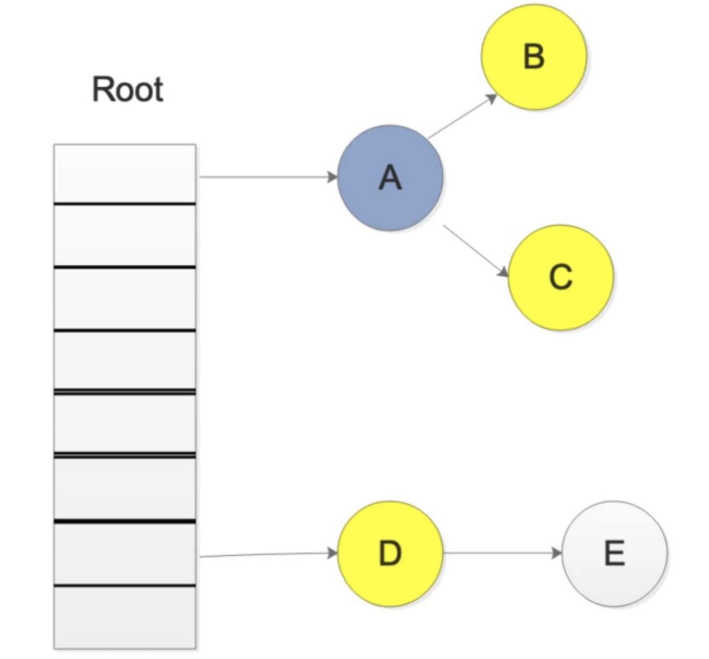

极客时间大厂面试题¶
Golang 基础¶
1、与其他语言相比，使用 Go 有什么好处？ ¶
Go 代码的设计是务实的。每个功能和语法决策都旨在让程序员的生活更轻松。Golang 针对并发进行了优化，并且在规模上运行良好。由于单一的标准代码格式，Golang 通常被认为比其他语言更具可读性。 自动垃圾收集明显比 Java 或 Python 更有效，因为它与程序同时执行。
2、Golang 使用什么数据类型？ ¶
Golang 使用以下类型：
- Method
- Boolean
- Numeric
- String
- Array
- Slice
- Struct
- Pointer
- Function
- Interface
- Map
- Channel9
3、Go 程序中的包是什么？ ¶
包 (pkg) 是 Go 工作区中包含 Go 源文件或其他包的目录。源文件中的每个函数、变量和类型都存储在链接包中。每个 Go 源文件都属于一个包，该包在文件顶部使用以下命令声明：
<font style="color:rgb(0,0,0);">package <packagename> </font>
您可以使用以下方法导入和导出包以重用导出的函数或类型：
<font style="color:rgb(0,0,0);">import <packagename> </font>
Golang 的标准包是 fmt，其中包含格式化和打印功能，如 Println().
4、Go 支持什么形式的类型转换？将整数转换为浮点数。 ¶
Go 支持显式类型转换以满足其严格的类型要求。
<font style="color:rgb(0,0,0);">i := 55 //int </font>
<font style="color:rgb(0,0,0);">j := 67.8 //float64 </font>
<font style="color:rgb(0,0,0);">sum := i + int(j) //j is converted to int </font>
5、什么是 Goroutine？你如何停止它？ ¶
一个 Goroutine 是一个函数或方法执行同时旁边其他任何够程采用了特殊的Goroutine 线程。Goroutine 线程比标准线程更轻量级，大多数 Golang 程序同时使用数千个 g、Goroutine。10要创建 Goroutine，请 go 在函数声明之前添加关键字。
<font style="color:rgb(0,0,0);">go f(x, y, z) </font>
您可以通过向 Goroutine 发送一个信号通道来停止它。Goroutines 只能在被告知检查时响应信号，因此您需要在逻辑位置（例如 for 循环顶部）包含检查。
package main
func main() {
quit := make(chan bool)
go func() {
for {
select {
case <-quit:
return
default:
// …
}
}
}()
// …
quit <- true
}
6、 如何在运行时检查变量类型？ ¶
类型开关是在运行时检查变量类型的最佳方式。类型开关按类型而不是值来评估变量。每个 Switch 至少包含一个 case，用作条件语句，和一个defaultcase，如果没有一个 case 为真，则执行。
7、Go 两个接口之间可以存在什么关系？ ¶
如果两个接口有相同的方法列表，那么他们就是等价的，可以相互赋值。如果接口 A 的方法列表是接口 B 的方法列表的自己，那么接口 B 可以赋值给接口A。接口查询是否成功，要在运行期才能够确定。
8、Go 当中同步锁有什么特点？作用是什么 ¶
当一个 Goroutine（协程）获得了 Mutex 后，其他 Gorouline（协程）就只能乖乖的等待，除非该 gorouline 释放了该 MutexRWMutex 在 读锁 占用的情况下，会阻止写，但不阻止读 RWMutex 在 写锁占用情况下，会阻止任何其他 goroutine（无论读和写）进来，整个锁相当于由该 goroutine 独占同步锁的作用是保证资源在使用时的独有性，不会因为并发而导致数据错乱，保证系统的稳定性。
9、Go 语言当中 Channel（通道）有什么特点，需要注意什么？ ¶
如果给一个 nil 的 channel 发送数据，会造成永远阻塞如果从一个 nil 的channel 中接收数据，也会造成永久爱阻塞给一个已经关闭的 channel 发送数据， 会引起 pannic 从一个已经关闭的 channel 接收数据， 如果缓冲区中为空，则返回一个零值。
10、Go 语言当中 Channel 缓冲有什么特点？ ¶
无缓冲的 channel 是同步的，而有缓冲的 channel 是非同步的。
11、Go 语言中 cap 函数可以作用于那些内容？ ¶
cap 函数在讲引用的问题中已经提到，可以作用于的类型有：
- array(数组)
- slice(切片)
- channel(通道)
12、go convey 是什么？一般用来做什么？ ¶
go convey 是一个支持 golang 的单元测试框架
go convey 能够自动监控文件修改并启动测试，并可以将测试结果实时输出到 Web 界面
go convey 提供了丰富的断言简化测试用例的编写
13、Go 语言当中 new 和 make 有什么区别吗？ ¶
new 的作用是初始化一个纸箱类型的指针 new 函数是内建函数，函数定义：
<font style="color:rgb(0,0,0);">func new(Type) *Type </font>
- 使用 new 函数来分配空间
- 传递给 new 函数的是一个类型，而不是一个值
- 返回值是指向这个新非配的地址的指针
14、Go 语言中 make 的作用是什么？ ¶
make 的作用是为 slice, map or chan 的初始化 然后返回引用 make 函数是内建函数，函数定义：
<font style="color:rgb(0,0,0);">func make(Type, size IntegerType) Type</font>
make(T, args) 函数的目的和 new(T) 不同 仅仅用于创建 slice, map, channel 而且返回类型是实例。
15、Printf(),Sprintf(),FprintF() 都是格式化输出，有什么不同？ ¶
虽然这三个函数，都是格式化输出，但是输出的目标不一样
<font style="color:rgb(0,0,0);">Printf</font> 是标准输出，一般是屏幕，也可以重定向。
<font style="color:rgb(0,0,0);">Sprintf()</font>是把格式化字符串输出到指定的字符串中。
<font style="color:rgb(18,18,18);">Fprintf()</font>是吧格式化字符串输出到文件中。
16、Go 语言当中数组和切片的区别是什么？ ¶
数组：
数组固定长度数组长度是数组类型的一部分，所以 [3]int 和 [4]int 是两种不同的数组类型数组需要指定大小，不指定也会根据处初始化对的自动推算出大小，不可改变数组是通过值传递的
切片：
切片可以改变长度切片是轻量级的数据结构，三个属性，指针，长度，容量不需要指定大小切片是地址传递（引用传递）可以通过数组来初始化，也可以通过内置函数 make() 来初始化，初始化的时候 <font style="color:rgb(0,0,0);">len=cap</font>，然后进行扩容
17、Go 语言当中值传递和地址传递（引用传递）如何运用？有什么区别？举例说明。¶
- 值传递只会把参数的值复制一份放进对应的函数，两个变量的地址不同，不可相互修改。
- 地址传递(引用传递)会将变量本身传入对应的函数，在函数中可以对该变量进行值内容的修改。
18、Go 语言当中数组和切片在传递的时候的区别是什么？ ¶
- 数组是值传递
- 切片是引用传递
19、Go 语言是如何实现切片扩容的？ ¶
func main() {
arr := make([]int, 0)
for i := 0; i < 2000; i++ {
fmt.Println("len 为", len(arr), "cap 为", cap(arr))
arr = append(arr, i)
}
}
我们可以看下结果:
0,1,2,4,8,16,32,64,128,256,512,1024
但到了 1024 之后,就变成了
1024,1280,1696,2304
每次都是扩容了四分之一左右
20、看下面代码的 defer 的执行顺序是什么？ defer 的作用和特 ¶
点是什么？
defer 的作用是：
你只需要在调用普通函数或方法前加上关键字 defer，就完成了 defer 所需要的语法。当 defer 语句被执行时，跟在 defer 后面的函数会被延迟执行。直到包含该 defer 语句的函数执行完毕时，defer 后的函数才会被执行，不论包含defer 语句的函数是通过 return 正常结束，还是由于 panic 导致的异常结束。 你可以在一个函数中执行多条 defer 语句，它们的执行顺序与声明顺序相反。
defer 的常用场景：
defer 语句经常被用于处理成对的操作，如打开、关闭、连接、断开连接、加锁、释放锁。
- 通过 defer 机制，不论函数逻辑多复杂，都能保证在任何执行路径下，资源被释放。
- 释放资源的 defer 应该直接跟在请求资源的语句后。
21、Golang Slice 的底层实现 ¶
切片是基于数组实现的，它的底层是数组，它自己本身非常小，可以理解为对底层数组的抽象。因为基于数组实现，所以它的底层的内存是连续分配的，效率非常高，还可以通过索引获得数据，可以迭代以及垃圾回收优化。
切片本身并不是动态数组或者数组指针。它内部实现的数据结构通过指针引用底层数组，设定相关属性将数据读写操作限定在指定的区域内。切片本身是一个只读对象，其工作机制类似数组指针的一种封装。
切片对象非常小，是因为它是只有 3 个字段的数据结构：
- 指向底层数组的指针
- 切片的长度
- 切片的容量
22、Golang Slice 的扩容机制，有什么注意点？ ¶
Go 中切片扩容的策略是这样的：
- 首先判断，如果新申请容量大于 2 倍的旧容量，最终容量就是新申请的容量
- 否则判断，如果旧切片的长度小于 1024，则最终容量就是旧容量的两倍
- 否则判断，如果旧切片长度大于等于 1024，则最终容量从旧容量开始循环，增加原来的 1/4, 直到最终容量大于等于新申请的容量
- 如果最终容量计算值溢出，则最终容量就是新申请容量
23、扩容前后的 Slice 是否相同？ ¶
情况一：
原数组还有容量可以扩容（实际容量没有填充完），这种情况下，扩容以后的
数组还是指向原来的数组，对一个切片的操作可能影响多个指针指向相同地址
的 Slice。
情况二：
原来数组的容量已经达到了最大值，再想扩容， Go 默认会先开一片内存区
域，把原来的值拷贝过来，然后再执行 append() 操作。这种情况丝毫不影响
原数组。
要复制一个 Slice，最好使用 Copy 函数。
24、Golang 的参数传递、引用类型 ¶
Go 语言中所有的传参都是值传递（传值），都是一个副本，一个拷贝。
因为拷贝的内容有时候是非引用类型（int、string、struct 等这些），这样就在函数中就无法修改原内容数据；
有的是引用类型（指针、map、slice、chan 等这些），这样就可以修改原内容数据。
Golang 的引用类型包括 slice、map 和 channel。它们有复杂的内部结构，除了申请内存外，还需要初始化相关属性。内置函数 new 计算类型大小，为其分配零值内存，返回指针。而 make 会被编译器翻译成具体的创建函数，由其分配内存和初始化成员结构，返回对象而非指针。
25、Golang Map 底层实现 ¶
Golang 中 map 的底层实现是一个散列表，因此实现 map 的过程实际上就是实现散表的过程。在这个散列表中，主要出现的结构体有两个，一个叫 hmap(a header for a go map)，一个叫 bmap(a bucket for a Go map，通常叫其 bucket)。
26、Golang Map 如何扩容 ¶
装载因子：count/2^B
触发条件：
- 装填因子是否大于 6.5
- overflow bucket 是否太多
解决方法：
- 双倍扩容：扩容采取了一种称为“渐进式”地方式，原有的 key 并不会一次性搬迁完毕，每次最多只会搬迁 2 个 bucket
- 等量扩容：重新排列，极端情况下，重新排列也解决不了，map 成了链表，性能大大降低，此时哈希种子 hash0 的设置，可以降低此类极端场景的发生
27、Golang Map 查找 ¶
Go 语言中 map 采用的是哈希查找表，由一个 key 通过哈希函数得到哈希值，64位系统中就生成一个64bit 的哈希值，由这个哈希值将 key 对应到不同的桶（bucket）中，当有多个哈希映射到相同的的桶中时，使用链表解决哈希冲突。key 经过 hash 后共 64 位，根据 hmap 中 B 的值，计算它到底要落在哪个桶时，桶的数量为 2^B，如 B=5，那么用 64 位最后 5 位表示第几号桶，在用 hash值的高 8 位确定在bucket 中的存储位置，当前 bmap 中的 bucket 未找到，则查询对应的 overflow bucket，对应位置有数据则对比完整的哈希值，确定是否是要查找的数据。
如果两个不同的 key 落在的同一个桶上，hash 冲突使用链表法接近，遍历bucket 中的 key 如果当前处于 map 进行了扩容，处于数据搬移状态，则优先从oldbuckets 查找。
28、介绍一下 Channel ¶
Go 语言中，不要通过共享内存来通信，而要通过通信来实现内存共享。Go 的CSP (Communicating Sequential Process)并发模型，中文可以叫做通信顺序进程，是通过 goroutine 和 channel 来实现的。
所以 channel 收发遵循先进先出 FIFO，分为有缓存和无缓存，channel 中大致有 buffer(当缓冲区大小部位 0 时，是个 ring buffer)、sendx 和 recvx 收发的位置(ring buffer 记录实现)、sendq、recvq 当前channel 因为缓冲区不足而阻塞的队列、使用双向链表存储、还有一个 mutex 锁控制并发、其他原属等。
29、Go 语言的 Channel 特性？ ¶
- 给一个 nil channel 发送数据，造成永远阻塞
- 从一个 nil channel 接收数据，造成永远阻塞
- 给一个已经关闭的 channel 发送数据，引起 panic
- 从一个已经关闭的 channel 接收数据，如果缓冲区中为空，则返回一个零值
- 无缓冲的 channel 是同步的，而有缓冲的 channel 是非同步的
- 关闭一个 nil channel 将会发生 panic
30、Channel 的 ring buffer 实现 ¶
channel 中使用了 ring buffer(环形缓冲区) 来缓存写入的数据。ring buffer 有很多好处，而且非常适合用来实现 FIFO 式的固定长度队列。
在 channel 中，ring buffer 的实现如下：

hchan 中有两个与 buffer 相关的变量:recvx 和 sendx。其中 sendx 表示buffer 中可写的 index，recvx 表示buffer 中可读的 index。 从 recvx 到sendx 之间的元素，表示已正常存放入 buffer 中的数据。
我们可以直接使用 buf[recvx]来读取到队列的第一个元素，使用 buf[sendx] = x 来将元素放到队尾。
Go 并发编程 ¶
1、Mutex 几种状态 ¶
- mutexLocked — 表示互斥锁的锁定状态；
- mutexWoken — 表示从正常模式被从唤醒；
- mutexStarving — 当前的互斥锁进入饥饿状态；
- waitersCount — 当前互斥锁上等待的 Goroutine 个数；
2、Mutex 正常模式和饥饿模式 ¶
正常模式(非公平锁) ¶
正常模式下，所有等待锁的 goroutine 按照 FIFO(先进先出)顺序等待。唤醒的goroutine 不会直接拥有锁，而是会和新请求锁的 goroutine 竞争锁的拥有。新请求锁的 goroutine 具有优势：它正在 CPU 上执行，而且可能有好几个，所以刚刚唤醒的 goroutine 有很大可能在锁竞争中失败。在这种情况下，这个被唤醒的 goroutine 会加入到等待队列的前面。 如果一个等待的 goroutine 超过1ms 没有获取锁，那么它将会把锁转变为饥饿模式。
饥饿模式(公平锁) ¶
为了解决了等待 G 队列的长尾问题饥饿模式下，直接由 unlock 把锁交给等待队列中排在第一位的 G(队头)，同时，饥饿模式下，新进来的 G 不会参与抢锁也不会进入自旋状态，会直接进入等待队列的尾部,这样很好的解决了老的 g 一直抢不到锁的场景。饥饿模式的触发条件，当一个 G 等待锁时间超过 1 毫秒时，或者当前队列只剩下一个 g 的时候，Mutex 切换到饥饿模式。
总结¶
对于两种模式，正常模式下的性能是最好的，goroutine 可以连续多次获取锁，饥饿模式解决了取锁公平的问题，但是性能会下降，其实是性能和公平的一个平衡模式。
3、Mutex 允许自旋的条件 ¶
- 锁已被占用，并且锁不处于饥饿模式。
- 积累的自旋次数小于最大自旋次数（active_spin=4）。
- cpu 核数大于 1。
- 有空闲的 P。
- 当前 goroutine 所挂载的 P 下，本地待运行队列为空。
4、RWMutex 实现 ¶
通过记录 readerCount 读锁的数量来进行控制，当有一个写锁的时候，会将读锁数量设置为负数 1<<30。目的是让新进入的读锁等待写锁之后释放通知读锁。同样的写锁也会等等待之前的读锁都释放完毕，才会开始进行后续的操作。 而等写锁释放完之后，会将值重新加上 1<<30, 并通知刚才新进入的读锁
(rw.readerSem)，两者互相限制。
5、RWMutex 注意事项¶
- RWMutex 是单写多读锁，该锁可以加多个读锁或者一个写锁
- 读锁占用的情况下会阻止写，不会阻止读，多个 goroutine 可以同时获取读锁
- 写锁会阻止其他 goroutine（无论读和写）进来，整个锁由该 goroutine 独占
- 适用于读多写少的场景
- RWMutex 类型变量的零值是一个未锁定状态的互斥锁。
- RWMutex 在首次被使用之后就不能再被拷贝。
- RWMutex 的读锁或写锁在未锁定状态，解锁操作都会引发 panic。
- RWMutex 的一个写锁
**Lock**<font style="color:rgb(10,191,91);"></font>去锁定临界区的共享资源，如果临界区的共享资源已被（读锁或写锁）锁定，这个写锁操作的 goroutine 将被阻塞直到解锁。 - RWMutex 的读锁不要用于递归调用，比较容易产生死锁。
- RWMutex 的锁定状态与特定的 goroutine 没有关联。一个 goroutine 可以 RLock（Lock），另一个 goroutine 可以 RUnlock（Unlock）。
- 写锁被解锁后，所有因操作锁定读锁而被阻塞的 goroutine 会被唤醒，并都可以成功锁定读锁。
- 读锁被解锁后，在没有被其他读锁锁定的前提下，所有因操作锁定写锁而被阻塞的 goroutine，其中等待时间最长的一个 goroutine 会被唤醒。
6、Cond 是什么 ¶
Cond 实现了一种条件变量，可以使用在多个 Reader 等待共享资源 ready 的场景（如果只有一读一写，一个锁或者 channel 就搞定了）每个 Cond 都会关联一个 Lock（sync.Mutex or sync.RWMutex），当修改条件或者调用Wait 方法时，必须加锁，保护 condition。
7、Broadcast 和 Signal 区别 ¶
<font style="color:rgb(0,0,0);">func (c *Cond) Broadcast() </font>
Broadcast 会唤醒所有等待 c 的 goroutine。
调用 Broadcast 的时候，可以加锁，也可以不加锁。
<font style="color:rgb(0,0,0);">func (c *Cond) Signal() </font>
Signal 只唤醒 1 个等待 c 的 goroutine。
调用 Signal 的时候，可以加锁，也可以不加锁。
8、Cond 中 Wait 使用 ¶
func (c *Cond) Wait()
Wait()会自动释放 c.L，并挂起调用者的 goroutine。之后恢复执行，Wait()会在返回时对 c.L 加锁。
除非被 Signal 或者 Broadcast 唤醒，否则 Wait()不会返回。
由于 Wait()第一次恢复时，C.L 并没有加锁，所以当 Wait 返回时，调用者通常并不能假设条件为真。
取而代之的是, 调用者应该在循环中调用 Wait。（简单来说，只要想使用condition，就必须加锁。）
c.L.Lock()
for !condition() {
c.Wait()
}
... make use of condition ...
c.L.Unlock()
9、WaitGroup 用法 ¶
一个 WaitGroup 对象可以等待一组协程结束。使用方法是：
- main 协程通过调用 wg.Add(delta int) 设置 worker 协程的个数，然后创建 worker 协程；
- worker 协程执行结束以后，都要调用 wg.Done()；
- main 协程调用 wg.Wait() 且被 block，直到所有 worker 协程全部执行结束后返回。
10、WaitGroup 实现原理 ¶
WaitGroup 主要维护了 2 个计数器，一个是请求计数器 v，一个是等待计数器 w，二者组成一个 64bit 的值，请求计数器占高 32bit，等待计数器占低32bit。
每次 Add 执行，请求计数器 v 加 1，Done 方法执行，请求计数器减 1，v 为0 时通过信号量唤醒 Wait()。
11、什么是 sync.Once ¶
- Once 可以用来执行且仅仅执行一次动作，常常用于单例对象的初始化场景。
- Once 常常用来初始化单例资源，或者并发访问只需初始化一次的共享资源，或者在测试的时候初始化一次测试资源。
- sync.Once 只暴露了一个方法 Do，你可以多次调用 Do 方法，但是只有第一次调用 Do 方法时 f 参数才会执行，这里的 f 是一个无参数无返回值的函数。
12、什么操作叫做原子操作 ¶
一个或者多个操作在 CPU 执行过程中不被中断的特性，称为原子性(atomicity)。这些操作对外表现成一个不可分割的整体，他们要么都执行，要么都不执行，外界不会看到他们只执行到一半的状态。而在现实世界中，CPU不可能不中断的执行一系列操作，但如果我们在执行多个操作时，能让他们的中间状态对外不可见，那我们就可以宣城他们拥有了“不可分割”的原子性。
在 Go 中，一条普通的赋值语句其实不是一个原子操作。列如，在 32 位机器上写 int64 类型的变量就会有中间状态，因为他会被拆成两次写操作(MOV)——写低 32 位和写高 32 位。
13、原子操作和锁的区别 ¶
原子操作由底层硬件支持，而锁则由操作系统的调度器实现。锁应当用来保护一段逻辑，对于一个变量更新的保护，原子操作通常会更有效率，并且更能利用计算机多核的优势，如果要更新的是一个复合对象，则应当使用<font style="color:rgb(255,80,44);">atomic.Value </font>封装好的实现。
14、什么是 CAS ¶
CAS 的全称为 Compare And Swap，直译就是比较交换。是一条 CPU 的原子指令，其作用是让 CPU 先进行比较两个值是否相等，然后原子地更新某个位置的值，其实现方式是给予硬件平台的汇编指令，在 intel 的 CPU 中，使用的cmpxchg 指令，就是说 CAS 是靠硬件实现的，从而在硬件层面提升效率。
简述过程是这样：
假设包含 3 个参数内存位置(V)、预期原值(A)和新值(B)。V 表示要更新变量的值，E 表示预期值，N 表示新值。仅当 V 值等于 E 值时，才会将 V 的值设为 N，如果 V 值和 E 值不同，则说明已经有其他线程在做更新，则当前线程什么都不做，最后 CAS 返回当前 V 的真实值。CAS 操作时抱着乐观的态度进行的，它总是认为自己可以成功完成操作。基于这样的原理，CAS 操作即使没有锁，也可以发现其他线程对于当前线程的干扰。
15、sync.Pool 有什么用 ¶
对于很多需要重复分配、回收内存的地方，sync.Pool 是一个很好的选择。频繁地分配、回收内存会给 GC 带来一定的负担，严重的时候会引起 CPU 的毛刺，而 sync.Pool 可以将暂时不用的对象缓存起来，待下次需要的时候直接使用，不用再次经过内存分配，复用对象的内存，减轻 GC 的压力，提升系统的性能。
Go Runtime ¶
1、Goroutine 定义 ¶
Goroutine 是一个与其他 goroutines 并行运行在同一地址空间的 Go 函数或方法。一个运行的程序由一个或更多个 goroutine 组成。它与线程、协程、进程等不同。它是一个 goroutine” —— Rob Pike
Goroutines 在同一个用户地址空间里并行独立执行 functions，channels 则用于 goroutines 间的通信和同步访问控制。
2、GMP 指的是什么 ¶
G（Goroutine）：我们所说的协程，为用户级的轻量级线程，每个 Goroutine对象中的 sched 保存着其上下文信息.。
M（Machine）：对内核级线程的封装，数量对应真实的 CPU 数（真正干活的对象）。
P（Processor）：即为 G 和 M 的调度对象，用来调度 G 和 M 之间的关联关系，其数量可通过GOMAXPROCS()来设置，默认为核心数。
3、1.0 之前 GM 调度模型 ¶
调度器把 G 都分配到 M 上，不同的 G 在不同的 M 并发运行时，都需要向系统申请资源，比如堆栈内存等，因为资源是全局的，就会因为资源竞争照成很多性能损耗。为了解决这一的问题 go 从 1.1 版本引入，在运行时系统的时候加入 p 对象，让 P 去管理这个 G 对象，M 想要运行 G，必须绑定 P，才能运行 P 所管理的 G。
- 单一全局互斥锁(Sched.Lock)和集中状态存储
- Goroutine 传递问题（M 经常在 M 之间传递”可运行”的 goroutine）
- 每个 M 做内存缓存，导致内存占用过高，数据局部性较差
- 频繁 syscall 调用，导致严重的线程阻塞/解锁，加剧额外的性能损耗
4、GMP 调度流程 ¶
¶
- 每个 P 有个局部队列，局部队列保存待执行的 goroutine(流程 2)，当 M 绑定的 P 的的局部队列已经满了之后就会把 goroutine 放到全局队列(流程 2-1)
- 每个 P 和一个 M 绑定，M 是真正的执行 P 中 goroutine 的实体(流程 3)，M 从绑定的 P 中的局部队列获取 G 来执行
- 当 M 绑定的 P 的局部队列为空时，M 会从全局队列获取到本地队列来执行G(流程 3.1)，当从全局队列中没有获取到可执行的 G 时候，M 会从其他 P的局部队列中偷取 G 来执行(流程 3.2)，这种从其他 P 偷的方式称为 work stealing
- 当 G 因系统调用(syscall)阻塞时会阻塞 M，此时 P 会和 M 解绑即 hand off，并寻找新的 idle 的 M，若没有 idle 的 M 就会新建一个 M(流程 5.1)。
- 当 G 因 channel 或者 network I/O 阻塞时，不会阻塞 M，M 会寻找其他runnable 的 G；当阻塞的 G 恢复后会重新进入 runnable 进入 P 队列等待执行(流程 5.3)
5、GMP 中 work stealing 机制 ¶
存到 P 本地队列或者是全局队列。P 此时去唤醒一个 M。P 继续执行它的执行序。M 寻找是否有空闲的 P，如果有则将该 G 对象移动到它本身。接下来 M 执行一个调度循环(调用 G 对象->执行->清理线程→继续找新的Goroutine 执行)。
6、GMP 中 hand off 机制¶
当本线程 M 因为 G 进行的系统调用阻塞时，线程释放绑定的 P，把 P 转移给其他空闲的 M'执行。当发生上线文切换时，需要对执行现场进行保护，以便下次被调度执行时进行现场恢复。Go 调度器 M 的栈保存在 G 对象上，只需要将 M 所需要的寄存器(SP、PC 等)保存到 G 对象上就可以实现现场保护。当这些寄存器数据被保护起来，就随时可以做上下文切换了，在中断之前把现场保存起来。如果此时 G 任务还没有执行完，M 可以将任务重新丢到 P 的任务队列，等待下一次被调度执行。当再次被调度执行时，M 通过访问 G 的 vdsoSP、vdsoPC 寄存器进行现场恢复(从上次中断位置继续执行)
7、协作式的抢占式调度 ¶
在 1.14 版本之前，程序只能依靠 Goroutine 主动让出 CPU 资源才能触发调度，存在问题 ：
- 某些 Goroutine 可以长时间占用线程，造成其它 Goroutine 的饥饿。
- 垃圾回收需要暂停整个程序（Stop-the-world，STW），最长可能需要几分钟的时间，导致整个程序无法工作。
8、基于信号的抢占式调度¶
在任何情况下，Go 运行时并行执行（注意，不是并发）的 goroutines 数量是小于等于 P 的数量的。为了提高系统的性能，P 的数量肯定不是越小越好，所以官方默认值就是 CPU 的核心数，设置的过小的话，如果一个持有 P 的 M，由于 P 当前执行的 G 调用了 syscall 而导致 M 被阻塞，那么此时关键点： GO 的调度器是迟钝的，它很可能什么都没做，直到 M 阻塞了相当长时间以后，才会发现有一个 P/M 被 syscall 阻塞了。然后，才会用空闲的 M 来强这个 P。通过 sysmon 监控实现的抢占式调度，最快在 20us，最慢在 10-20ms 才会发现有一个 M 持有 P 并阻塞了。操作系统在 1ms 内可以完成很多次线程调度（一般情况 1ms 可以完成几十次线程调度），Go 发起 IO/syscall 的时候执行该 G 的 M 会阻塞然后被 OS 调度走，P 什么也不干，sysmon 最慢要 10-20ms 才能发现这个阻塞，说不定那时候阻塞已经结束了，宝贵的 P 资源就这么被阻塞的 M 浪费了。
9、GMP 调度过程中存在哪些阻塞 ¶
- I/O，select
- block on syscall
- channel
- 等待锁30
- runtime.Gosched()
10、sysmon 有什么作用 ¶
sysmon 也叫监控线程，变动的周期性检查，好处：
- 释放闲置超过 5 分钟的 span 物理内存；
- 如果超过 2 分钟没有垃圾回收，强制执行；
- 将长时间未处理的 netpoll 添加到全局队列；
- 向长时间运行的 G 任务发出抢占调度(超过 10ms 的 g，会进行 retake)；
- 收回因 syscall 长时间阻塞的 P；
11、三色标记原理 ¶
我们首先看一张图，大概就会对 三色标记法有一个大致的了解：

原理：
- 首先把所有的对象都放到白色的集合中
- 从根节点开始遍历对象，遍历到的白色对象从白色集合中放到灰色集合中遍历灰色集合中的对象，把灰色对象引用的白色集合的对象放入到灰色集合中，同时把遍历过的灰色集合中的对象放到黑色的集合中
- 循环步骤 3，知道灰色集合中没有对象
- 步骤 4 结束后，白色集合中的对象就是不可达对象，也就是垃圾，进行回收
12、插入写屏障 ¶
golang 的回收没有混合屏障之前，一直是插入写屏障，由于栈赋值没有 hook 的原因，所以栈中没有启用写屏障，所以有 STW。golang 的解决方法是：只是需要在结束时启动 STW 来重新扫描栈。这个自然就会导致整个进程的赋值器卡顿，所以后面 golang 是引用混合写屏障解决这个问题。混合写屏障之后，就没有 STW。
13、删除写屏障 ¶
goalng 没有这一步，golang 的内存写屏障是由插入写屏障到混合写屏障过渡的。简单介绍一下，一个对象即使被删除了最后一个指向它的指针也依旧可以活过这一轮，在下一轮 GC 中被清理掉。
14、 写屏障 ¶
Go 在进行三色标记的时候并没有 STW，也就是说，此时的对象还是可以进行修改。
那么我们考虑一下，下面的情况。

我们在进行三色标记中扫描灰色集合中，扫描到了对象 A，并标记了对象 A 的 所有引用，这时候，开始扫描对象 D 的引用，而此时，另一个 goroutine 修改了 D->E 的引用，变成了如下图所示：

这样会不会导致 E 对象就扫描不到了，而被误认为为白色对象，也就是垃圾写屏障就是为了解决这样的问题，引入写屏障后，在上述步骤后，E 会被认为是存活的，即使后面 E 被 A 对象抛弃，E 会被在下一轮的 GC 中进行回收，这一轮 GC 中是不会对对象 E 进行回收的。
15、混合写屏障 ¶
- 混合写屏障继承了插入写屏障的优点，起始无需 STW 打快照，直接并发扫描垃圾即可；
- 混合写屏障继承了删除写屏障的优点，赋值器是黑色赋值器，GC 期间，任何在栈上创建的新对象，均为黑色。扫描过一次就不需要扫描了，这样就消除了插入写屏障时期最后 STW 的重新扫描栈；
- 混合写屏障扫描精度继承了删除写屏障，比插入写屏障更低，随着带来的是 GC 过程全程无 STW；
- 混合写屏障扫描栈虽然没有 STW，但是扫描某一个具体的栈的时候，还是要停止这个 goroutine 赋值器的工作的哈（针对一个 goroutine 栈来说，是暂停扫的，要么全灰，要么全黑哈，原子状态切换）。
16、GC 触发时机¶
主动触发：¶
调用 runtime.GC
被动触发：
使用系统监控，该触发条件由 runtime.forcegcperiod 变量控制，默认为 2 分钟。当超过两分钟没有产生任何 GC 时，强制触发 GC。
使用步调（Pacing）算法，其核心思想是控制内存增长的比例。如 Go 的 GC是一种比例 GC, 下一次 GC 结束时的堆大小和上一次 GC 存活堆大小成比例. 由 GOGC 控制, 默认 100, 即 2 倍的关系, 200 就是 3 倍。当 Go 新创建的对象所占用的内存大小，除以上次 GC 结束后保留下来的对象占用内存大小。
17、Go 语言中 GC 的流程是什么？ ¶
当前版本的 Go 以 STW 为界限，可以将 GC 划分为五个阶段：
阶段说明赋值器状态 GCMark 标记准备阶段，为并发标记做准备工作，启动写屏障 STWGCMark 扫描标记阶段，与赋值器并发执行，写屏障开启并发GCMarkTermination 标记终止阶段，保证一个周期内标记任务完成，停止写屏障 STWGCoff 内存清扫阶段，将需要回收的内存归还到堆中，写屏障关闭并发GCoff 内存归还阶段，将过多的内存归还给操作系统，写屏障关闭并发。
18、GC 如何调优 ¶
通过 <font style="color:rgb(0,0,0);">go tool pprof</font> 和 <font style="color:rgb(0,0,0);">go tool trace</font> 等工具
- 控制内存分配的速度，限制 goroutine 的数量，从而提高赋值器对 CPU的利用率。
- 减少并复用内存，例如使用 sync.Pool 来复用需要频繁创建临时对象，例如提前分配足够的内存来降低多余的拷贝。
- 需要时，增大 GOGC 的值，降低 GC 的运行频率。
更新: 2022-04-26 21:45:11
原文: https://www.yuque.com/xiaoshan_wgo/codingnotes/quhuua